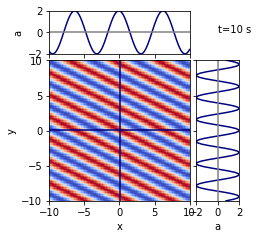
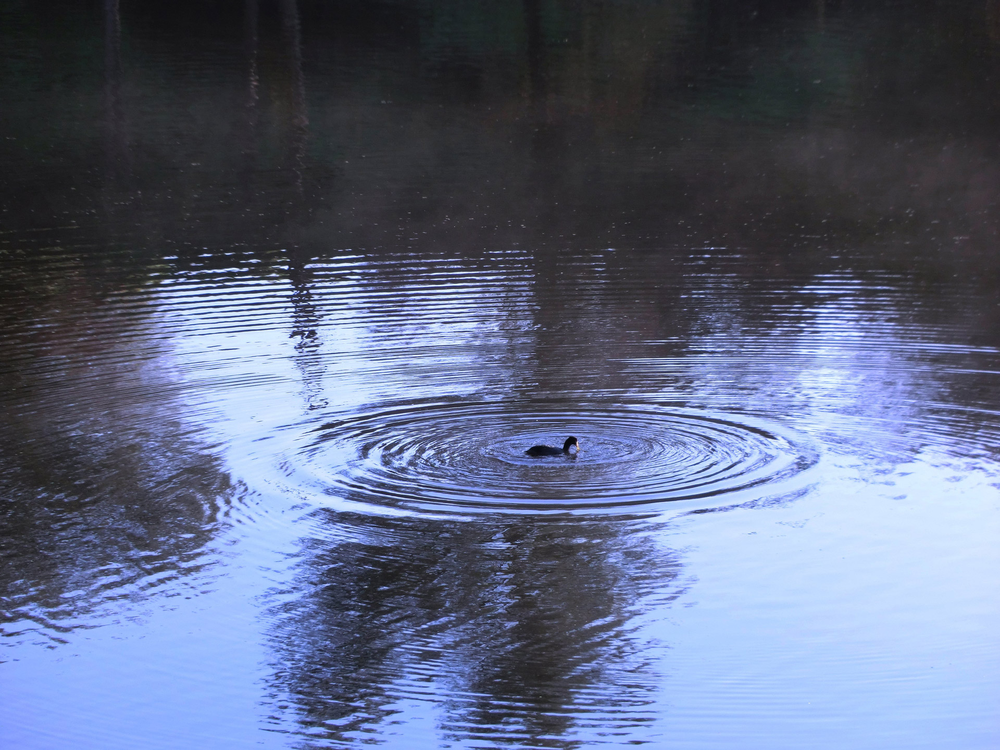
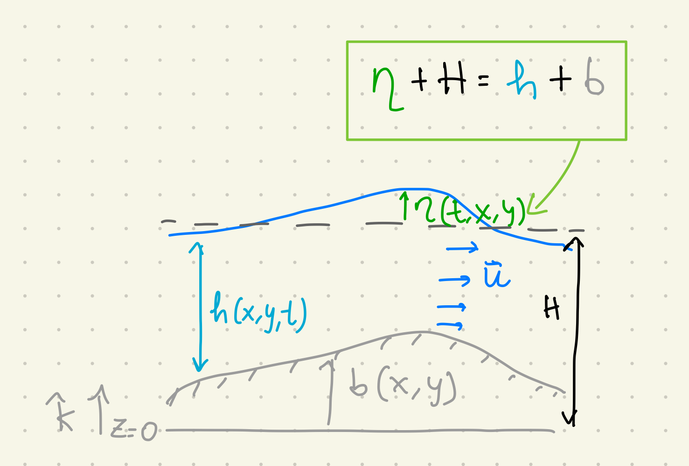
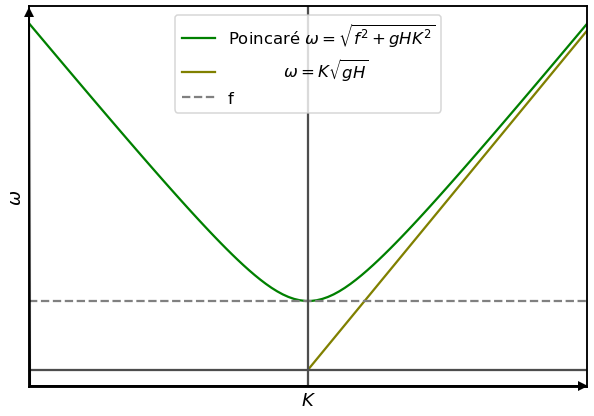
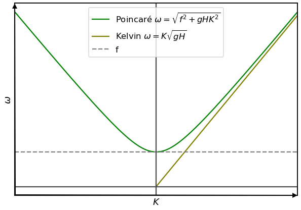

class: center, middle <br/><br/> .title[Dinámica de Fluidos Geofísicos] .subtitle[Ondas Barotrópicas I (Kelvin y Poincaré)] <br/><br/> .author[Semestre 2024-I] .institution[Facultad de Ciencias] <br/> .date[26 de octubre de 2023] <br/><br/> <img style="width:100%" src="./figures/green_waves.png"> <!-- .note[Created with [{Liminal}](https://github.com/jonathanlilly/liminal) using [{Remark.js}](http://remarkjs.com/) + [{Markdown}](https://github.com/adam-p/markdown-here/wiki/Markdown-Cheatsheet) + [{KaTeX}](https://katex.org)] --> --- name: toc class: left <img style="width:40%" src="./figures/ink.jpg"> #Contenido 1. [Prguntas de repaso](#repaso) 1. [Restricciones del flujo a estudiar](#Restricciones) 1. [Ondas de Poincaré](#Poincare) 1. [Ondas de Kelvin](#Kelvin) <!-- Comment out the next slide if you don't want the Table of Contents link --> --- layout: true .toc[[✧](#toc)] --- name: repaso class: left ## La clase pasada hicimos un repaso de cinemática de ondas en 2D y discutimos la velocidad de fase, de grupo, vector número de onda, frecuencia, relación de dispersión, etc. .center[] --- name: restricciones class: left ## Restricciones del flujo que estudiaremos Queremos ecuaciones lineales por lo que debemos encontrar los procesos lineales dominantes y para ello hay que imponer algunas restricciones en el flujo. **Términos de Coriolis** ($-fu$, $fv$) --> lineales $\checkmark$ **Cambio temporal** ($\partial u/\partial t$, $\partial v/\partial t$) --> lineales $\checkmark$ Los dejamos para investigar flujos no estacionarios, por lo que consideraremos $$Ro_T=\frac{1}{\Omega T}\sim 1$$ **Términos advectivos** ($u\partial u/\partial x$,$v\partial u/\partial y$, ...) --> no lineales Para quitarlos, consideramos solo flujos con $$Ro=\frac{U}{\Omega L}<<1.$$ Flujos lentos o de gran escala o que rotan rápido (en el laboratorio). --- class: left De acuerdo a las restricciones anteriores queremos **flujos lentos pero que evolucionan relativamente rápido**. ¿Es eso posible? -- ¡Sí! Una perturbación que se mueve rápido no necesita de grandes velocidades en el flujo. La información puede viajar más rápido que las partículas materiales --> Esto es una ONDA. Ej. .center[] .center[.caption[Ondas en un estanque. Imagen: Vince Mig, dominio público.]] --- class: left Además de las restricciones anteriores, consideraremos flujos homogéneos e invíscidos. Las **ecuaciones de aguas someras (EAS) linealizadas** describen adecuadamente a estos flujos: $$\frac{\partial u}{\partial t}-fv=-g\frac{\partial \eta}{\partial x}$$ $$\frac{\partial v}{\partial t}+fu=-g\frac{\partial \eta}{\partial y},$$ donde $f$, $g$, $u$ y $v$ son las variables usuales y $\eta$ es el desplazameinto de la superfice ($\eta=h-H$, la profundidad total del fluido $h$ menos el grosor promedio de la capa $H$, $b$=0) .center[] --- class: left La ecuación de continuidad de las EAS de puede expandir en varios términos: $$\frac{\partial \eta}{\partial t}+\left(u\frac{\partial \eta}{\partial x}+v\frac{\partial \eta}{\partial y}\right)+H\left(\frac{\partial u}{\partial x}+\frac{\partial v}{\partial y}\right)+\eta\left(\frac{\partial u}{\partial x}+\frac{\partial v}{\partial y}\right)=0.$$ Si el fondo es plano (H constante), introducimos la escala $\Delta H$ para $\eta$ y notamos que los cuatro términos anteriores son de órden $$\frac{\Delta H}{T}, U\frac{\Delta H}{L}, H\frac{U}{L}, \Delta H\frac{U}{L}.$$ De acuerdo a las restricciones en $Ro$ y $Ro_T$, $L/T>>U$ y el 2do y 4to término son mucho menores que el 1ro y el 3ro, por lo que nos queda la ecuación linealizada de continuidad: $$\frac{\partial \eta}{\partial t}+H\left(\frac{\partial u}{\partial x}+\frac{\partial v}{\partial y}\right)=0.$$ Este balance requiere que $\Delta H << H$ ---> **ondas de amplitud pequeña**. --- class: left ¿Qué ondas emergen en distintas situaciones en las EASL? $$\frac{\partial u}{\partial t}-fv=-g\frac{\partial \eta}{\partial x},$$ $$\frac{\partial v}{\partial t}+fu=-g\frac{\partial \eta}{\partial y},$$ $$\frac{\partial \eta}{\partial t}+H\left(\frac{\partial u}{\partial x}+\frac{\partial v}{\partial. y}\right)=0$$ **de Poincaré**: ondas de gravedad modificadas por la rotación, **de Kelvin**: ondas de gravedad modificadas por la rotación cerca de una frontera, **Planetarias** o **de Rossby**: ondas muuuy lentas cuando modificamos el parámetro de Coriolis, **Topográficas**: ondas cuando relajamos la restricción del fondo plano. --- name: Poincare class: left ## Ondas de gravedad con rotación Consideremos $f$ constante (y ondas con frecuencia $ \omega < f$). **Vamos a las notas...** En las notas obtuvimos una relación de dispersión a partir de considerar soluciones de onda para las EASL de la forma: $$(u, v, \eta)=(\hat{u},\hat{v},\hat{\eta})e^{i(kx+ly-\omega t)}$$ donde $\hat{u}$, $\hat{v}$, $\hat{\eta}$ son amplitudes complejas y solo tomamos la parte real del lado derecho de la solución. --- class: left ### Relación de dispersión para ondas de Poincaré * Ondas de gravedad modificadas por la rotación $$\omega^2=f^2+gHK^2$$ donde $K=\sqrt{k^2+l^2}$ es la magnitud del vector número de onda horizontal. .center[] --- class: left **¿Qué nos dice la relación de dispersión acerca de estas ondas?** * Las ondas se pueden propagar en cualquier dirección. * Tienen frecuencia $\omega > f$ * En general son ondas dispersivas pues su velocidad de fase depende del numero de onda: $$c=\frac{\omega}{K}=\frac{\sqrt{f^2+gHK^2}}{K}$$ * Pero, cuando $\omega >> f$ (frecuencias altas = periodos cortos), las ondas son no dispersivas: $$c=\frac{\omega}{K}\approx\\sqrt{gH}.$$ Esta es la velocidad de las ondas de gravedad sin rotación. Es decir, **la rotación no afecta a las ondas de gravedad de alta frecuencia**. --- class: left ## Preguntas de repaso Las ondas de Poincaré requeren de un medio estratificado para existir. a) verdadero b) falso -- **respuesta: b** --- class: left Las ondas de Poincaré: a) se propagan con la costa a la derecha en el hemisferio norte. b) siempre tienen frecuencia > $f$. c) son dispersivas a frecuencias altas. -- **respuesta: b** --- class: left Cuando la frecuencia de una onda de Poincaré se acerca a f, las trayectorias de las partículas son: a) circulares b) elipticas c) líneas rectas d) espirales -- **respuesta: a ** --- name: Kelvin class: left ## Ondas de gravedad con rotación cerca de una frontera sólida Vamos a las notas... --- class: left ## Relación de dispersión .center[] --- class: left ### Algunas animaciones de ondas de Kelvin <iframe width="560" height="315" src="https://www.youtube.com/embed/jSWmhkcPsHw" title="YouTube video player" frameborder="0" allow="accelerometer; autoplay; clipboard-write; encrypted-media; gyroscope; picture-in-picture" allowfullscreen></iframe> Roberto Fontes - Kelvin wave hemisferio Sur Perturbación gaussiana de la superficie libre: [animación](http://oxbow.sr.unh.edu/WaveMovies/3RossbyBump_KelvinSetup.mov) del [Profesor Jamie Pringle](http://oxbow.sr.unh.edu), University of New Hampshire --- class: left ## Referencias: Cushman-Roisin y Beckers - Capítulo 9 Kundu y Cohen - Capítulo 14-10 al 14-15 </br></br></br></br></br></br></br></br> .note[Notas creadas con [{Liminal}](https://github.com/jonathanlilly/liminal) usando [{Remark.js}](http://remarkjs.com/) + [{Markdown}](https://github.com/adam-p/markdown-here/wiki/Markdown-Cheatsheet) + [{KaTeX}](https://katex.org)]